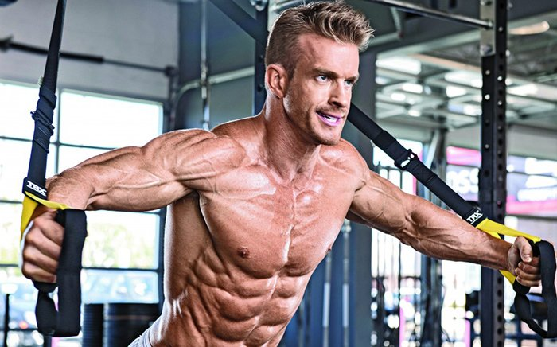

가슴운동
가슴운동
딥스
오늘 소개해 드릴 딥스는 바로 가슴 하부와 삼두 발달에 매우 좋은 운동입니다. 손쉽게 맨몸운동으로도 꼽히고 있죠. 놀이터에 있는 평행봉에서도 충분히 가능한 운동입니다. (사실 저녁에 사람 없으면 하고 들어오네요 ㅎㅎㅎ)
하지만 딥스는 분명 우리가 상체를 세우는 각도와 팔꿈치를 벌리는 정도에 따라 딥스의 종류가 확연히 나뉘게 됩니다. 정말 잡는 위치와 상체의 각도가 매우 중요하죠.
그렇기에 아래 그에 대한 자세하게 나누어 설명드릴터이니 꼭 어느 부위를 운동하고싶으신지 생각해보시고 그에 맞게 운동 방법을 선택하시기 바랍니다.
그렇다면 바로 운동 방법에 대해서 알아보겠습니다.
1. 바를 양손으로 잡고 발을 떼고 버텨줍니다.
2. 숨을 뱉으며 팔을 직각으로 형성하며 내려가줍니다.
3. 최대 가동범위에서 고정해줍니다.
4. 숨을 마시며 천천히 올라옵니다.
처음 화면으로